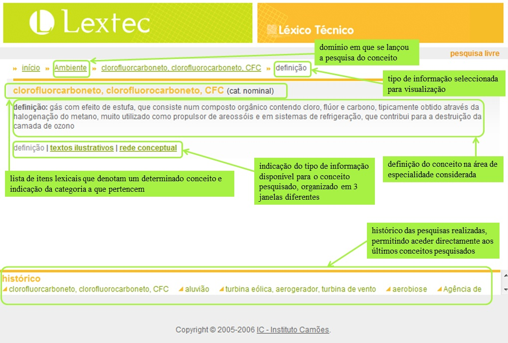
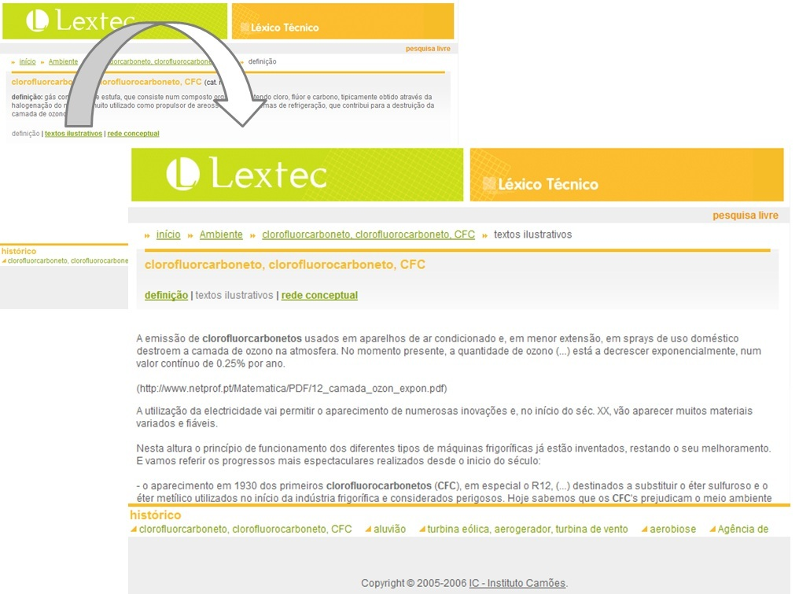
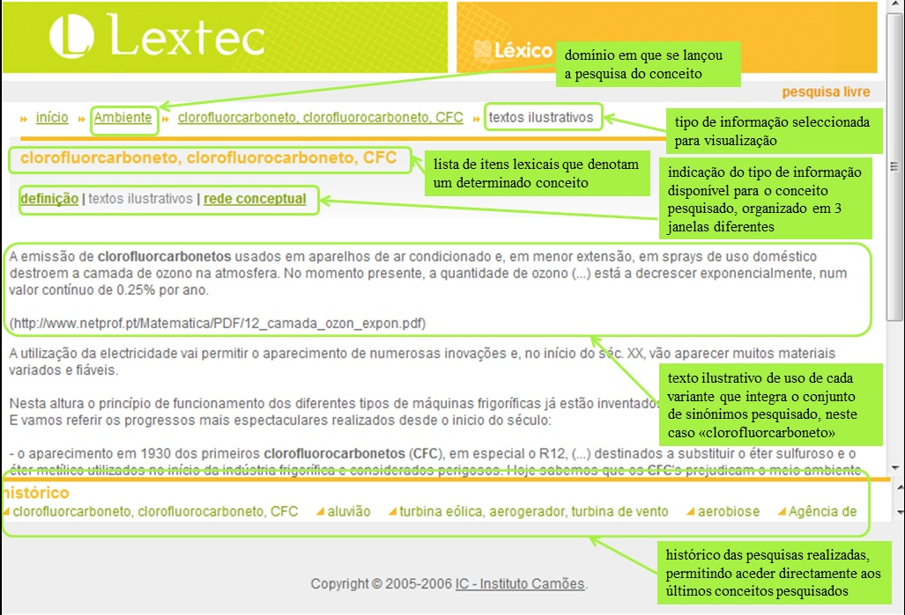
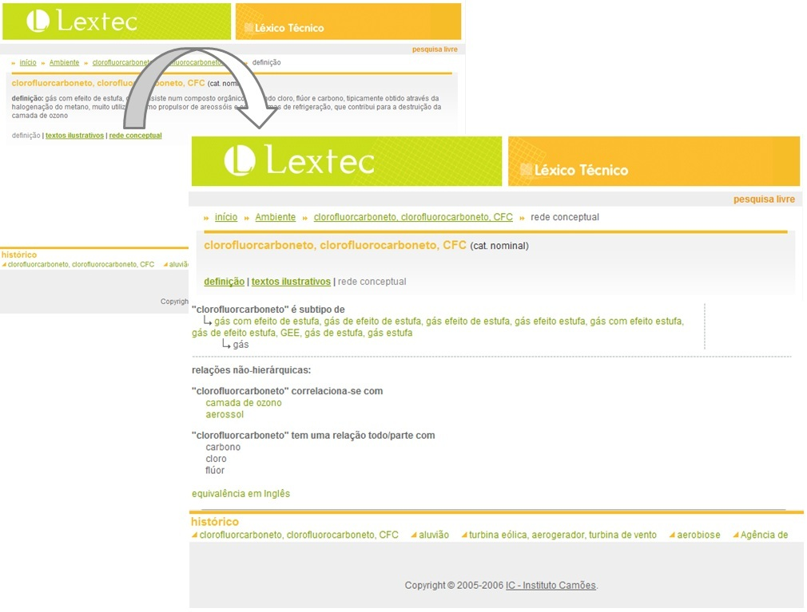
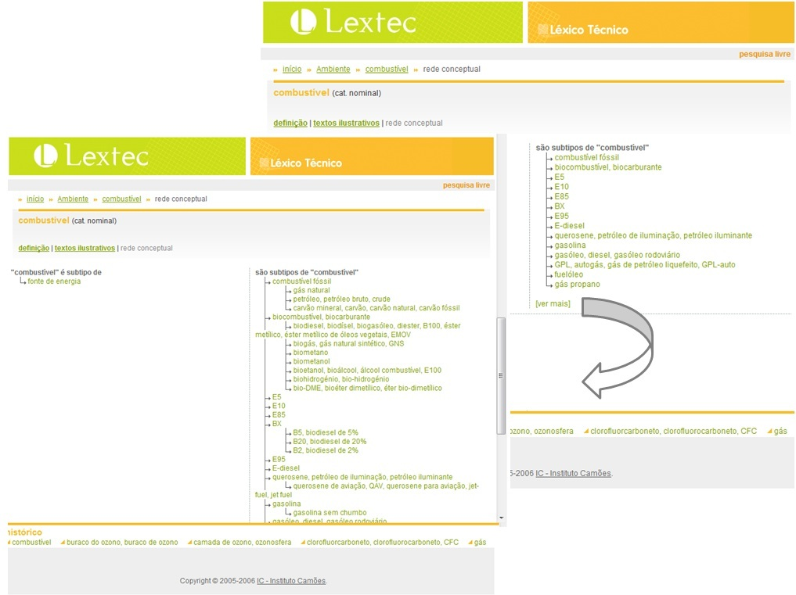

Os conteúdos trabalhados e disponibilizados no âmbito do projecto Lextec estão organizados num
conjunto de recursos que inclui: um glossário que integra expressões lingu&iacte;sticas de domínios específicos,
bem como as respectivas definições; uma base de textos autênticos que ilustram os contextos de uso das
expressões em questão e/ou fornecem informações adicionais de interesse para a compreensão dos
conceitos envolvidos; uma rede conceptual (wordnet) que relaciona entre si as expressões com o mesmo significado, que,
por seu turno, são relacionadas com outras, especificando ainda, para todas as expressões, relações de
correspondência com expressões em Inglês. Das relações estruturantes especificadas na rede,
destacam-se as relações de sinonímia, hiponímia/hiperoníma e
meronímia/holonímia. Adicionalmente é também especificado um grande número de
relações que envolvem a estrutura dos eventos e as entidades neles participantes, genericamente designadas como
relações de função, bem como relações que permitem definir o significado de cada nó
da rede com maior precisão, em particular uma séria de relaçõ,es
inter-categoriais.
Os conteúdos disponibilizados cobrem dez domínios de especialidade: Ambiente; Banca; Comércio;
Construção Civil; Energia; Seguros; Telecomunicações; Turismo; Direito Comercial Internacional;
e Economia e Gestão de Empresas.
Toda a informação codificada é tornada acessível ao utilizador através de uma interface flexível
e intuitiva, que permite uma navegação ágil dentro de cada um dos domínios de especialidade.
Apresentação da informação em cada entrada
Ao seleccionar uma determinada expressão para consulta, seja através da pesquisa livre, seja através das listas organizadas alfabeticamente para cada área, tem acesso a toda a informação referida na secção anterior, apresentada tal como ilustrado abaixo.

Cada conceito codificado na base de dados do projecto Lextec, e pesquisável através da interface de disponibilização na internet, está associado a diferentes tipos de informação, nomeadamente uma definição do conceito na área de especialidade considerada, textos ilustrativos do uso das expressões que integram o conjunto de sinónimos que denota o conceito em causa e uma rede conceptual que relaciona o conceito considerado com outros também codificados na rede que têm com ele relações de significado. O utilizador pode escolher qual dos 3 tipos de informação pretende consultar clicando no respectivo link, tal como se apresenta abaixo.

Seleccionando o link para visualizar os textos ilustrativos obtém-se uma janela como a que se apresenta abaixo.

Resta então explorar a janela de visualização da rede conceptual associada ao conceito pesquisado, seleccionando o link respectivo tal como se apresenta abaixo.

A janela que se abre permite visualizar a rede conceptual associada ao conceito pesquisado, bem como navegar na rede. Por exemplo, quando a expressão seleccionada faça parte de uma subrede com grande profundidade, poderá visualizar mais níveis, tanto de subtipos como de supertipos (sempre que estes estejam disponíveis para o conceito consultado), clicando na expressão [ver mais], tal como apresentado abaixo.

Outro aspecto a sublinhar no que respeita à navegação na interface prende-se com a possibilidade de passar de um conceito a outro com ele relacionado clicando apenas na expressão que o denota, dado que todos os conceitos referidos numa entrada que está a ser consultada, desde que estejam codificados na base de dados do Lextec, são ligações para a entrada em que são caracterizados. Esta navegação está limitada à mesma área de especialidade, não havendo cruzamentos entre os diferentes domínios.

 início
início